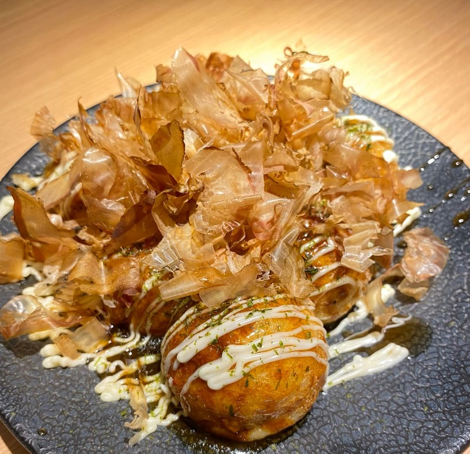
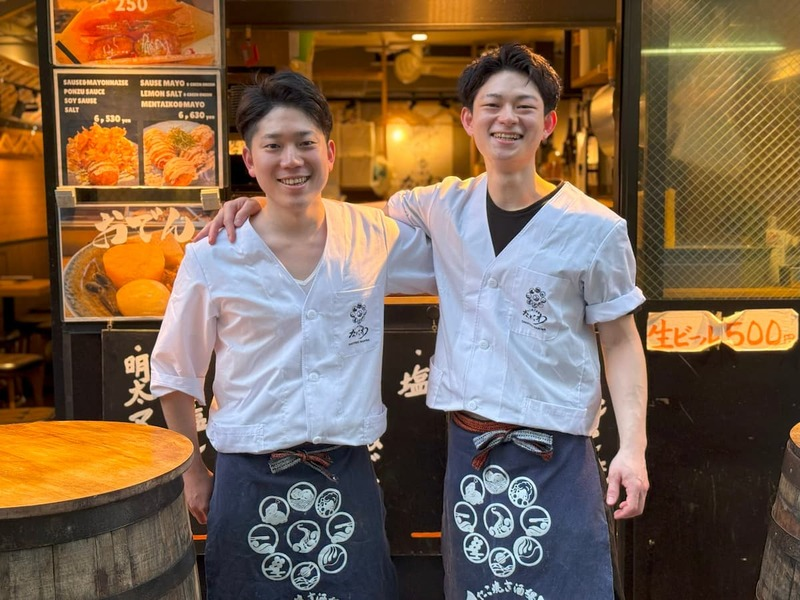

저희 '다코야키'는 부드럽고 촉촉한 식감과, 그대로 드셔도 맛있는 '다시(육수)'에 정성을 담았습니다.
반죽에는 다시마와 가쓰오부시를 더한 혼합 육수를 사용하여, 담백하면서도 깊은 감칠맛을 느낄 수 있는 오사카 본고장의 맛을 선사합니다!


닭날개, 닭봉, 가슴살 세 부위를 사용합니다.
닭날개와 닭봉은 살을 끝에 모으고, 가슴살은 두툼하게 썰어 비법 육수를 듬뿍 머금게 하여, 육즙 가득한 맛을 완성했습니다.



입사 단 1개월 만에 새로운 업종의 창립 멤버로 발탁되어, 전 메뉴를 직접 고안하고 브랜드를 처음부터 세운 주역입니다.
특이한 전직 SE(시스템 엔지니어)로서의 분석력과 풍부한 맛집 탐방 경험을 바탕으로, 저희만의 독특한 맛과 즐거움을 계속해서 추구하고 있습니다.
농구 명문교 출신의 에너지 넘치는 체육인입니다.
밝은 서비스와 동아리에서 다져진 뛰어난 리더십으로 팀을 이끄는 든든한 존재입니다.
점장 가와사키와 함께 매장을 활기차게 이끌며, 활력과 미소가 넘치는 가게를 만들기 위해 힘쓰고 있습니다!
 신메뉴가 준비되어 있습니다
신메뉴가 준비되어 있습니다